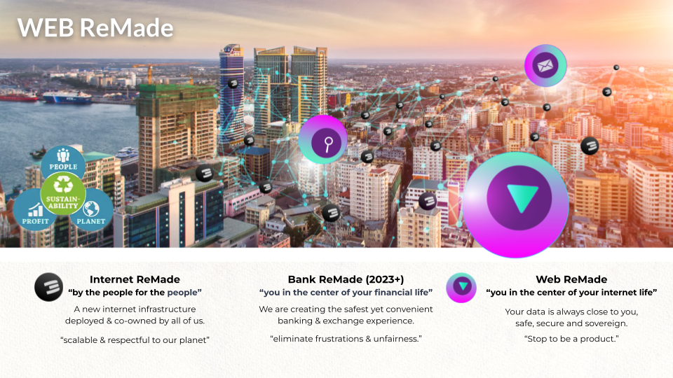

OurWorld Internet is an abundance based Internet of Internets system
Our beautiful world has become a crazy place with lots of changes. Do you want to be part of a movement which is making real change and which has a purpose to resolve some of the biggest issues in the world? We are a grounded movement, actions first. We have a practical executable plan and all required tools. Our practices are regenerative, spiritual and high tech.
There is a lot of talk in the world, we believe the time for talking is over, we need action and we need it now, our planet is a super beautiful place, we don’t want to take it for granted we want to fight for it. The Internet was a beautiful place 30 years ago, we want it back and we believe a better internet is an instrumental tool to make us free again, to allow us to all together create a better world for ourselves and our children. The internet is now owned by very few, and we became a product in a too capitalistic system.
It all started with a group of crazy people and “nerd” engineers, who decided to stop talking and just build a new system. We didn’t ask for permission, we didn’t do a crypto ICO with lots of promises, we started building.
With the help of more than 80 investors and thousands of project supporters we have been able to build a lot and are working on even more:
- A new internet infrastructure platform (fully peer2peer and decentralized, and super reliable) = ThreeFold
- A new decentralized and regulated finance & digital asset exchange system, based on values (work in progress)
- A set of incredible experiences, with the ability to provide digital freedom for all our online requirements.
- An upgraded economic system platform where no money needs to be paid to offer or find information, where lock-in does not exist.
- A Digital Twin system which is the base of Banking and Web 4.0, a new way to communicate, share, collaborate
- A decentralized healthcare & education system
More than 50m USD has been invested so far, we have a very active community of hundreds of contributors and we are working with some governments to deploy the system in their country.
We are excited about a future where we can together create a more safe platform, based on values, transparency and love. Not in a talking way, in a super practical can do mentality with concrete plan. We are doing it, join us… become part of our movement.
The Internet Is Not Sovereign

We want to help countries, many countries find themselves in a challenging situation where they have too much debt, people are potentially unhappy, there could be a risk of conflict, ...
We believe a new upgraded internet may help because:
- A large part of the world's population uses Internet services which are produced far away.
- The value of a digital life can be thousands of USD per year, this gets extracted from a countries GDP
- Data is stored outside your country leading to loss of influence and knowledge.
- Less job opportunities because local Internet economy is way smaller than what it can be
We believe a decentralized Internet of Internets could help. Some very concrete benefits for a country to get started now.

The world is changing in front of us, we cannot deny it and we need to act now.
We are in the forefront of a growing movement, more and more companies want to prioritize people and planet positive policies. We are not swimming against the stream, we are part of a group of leaders of change and making real the zeitgeist of the 21st century.
Companies and investors that fail to be part of this needed movement will seem like dinosaurs by 2030 and be valued by our communities accordingly.